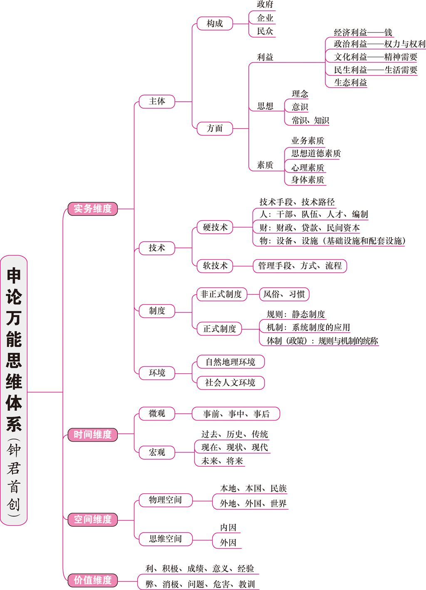

言语逻辑填空实词辨析成语辨析关联词辨析片段阅读十五技法主旨概括意图判断态度观点细节理解语句理解代词指代标题填入语句表达篇章阅读推理图形推理逻辑推理蔡金龙逻辑推理需要在复习了宝典的基础上，进行巩固定义判断蔡金龙定义判断结合宝典复习类比逻辑关系语法关系语义关系资料 数量 常识申论申论全景万能思维体系申论考试的本质：两个关键和根本逻辑申论的特征阅卷规则（写作模块）审题5要素申论细节——概括问题概括问题的基本技巧阅读材料技巧概括问题的标准及技巧申论细节——分析问题阐释题原因分析题评价题比较分析启示类问题设喻类问题申论细节——解决问题根据问题找原因根据原因提对策根据原则验对策贯彻执行的基本内容申论写作其他
言语
逻辑填空
实词辨析
可通过提炼文段的有效信息来排除无关选项或者直接确定答案。如：空白前后出现的词语，文段中多次重复出现的实词，表达句子之间的逻辑关系的关联词等
| 类型 | 说明 | 示例 |
|---|---|---|
| 感情色彩 | 消极or积极 | 成果、结果、后果 相似、雷同 尝试、冒险 |
| 语义轻重 | 意义相近的词语在表现程度上有程度深浅、性质轻重的区别 | 批判、批评 妨碍、妨害 损坏、破坏 |
| 表达风格 | 语体风格：口语、书面语 文体风格：小说、公文、散文 | 商量、商榷 调节、斡旋 |
| 语素差异 | 排除两个词语中相同的汉字的表述，重点观察不同汉字的表述 然后找到每个汉字的基本含义，判断二者语素差异 | 营利、盈利 学历、学力 |
| 词性功能 | 不同词性的词意义可能相同，但在承担句子成分时的功能却有所不同 通常： 动词后面应该是名词或名词性成分 名词前是形容词 修饰动词的可能是形容词也可能是副词 | |
| 搭配范围 | 不同词语有着不同的搭配对象、使用范围 | 期望、希望 爱戴、爱护 伺候、侍候 |
| 语境信息/限定选项 | 感情色彩、语义轻重、表达风格或者指向含义的具体词语、表逻辑的关联词和标点符号 |
成语辨析
| 类别 | 说明 |
|---|---|
| 感情色彩 | 褒贬 |
| 搭配范围 | 谨防语义上的重复累赘、矛盾等 |
| 句法功能 | 考察成语的句法功能与整句话的需求是否一致（弄清每个成语的具体含义） |
关联词辨析
| 类型 | 说明 |
|---|---|
| 并列 | 既...又... 一边...一边... 又...又... 有的...有的... 不是...而是... 一方面...另一方面... |
| 承接 | （首先）...然后... ...便... ...就... ...于是... |
| 递进 | 不但...而且... 不仅...还... 不但不...还... ...甚至... ...更... |
| 因果 | 因为...所以... 由于...以至于... 由于...因而... |
| 转折 | 其实... 实际上... 事实上... 只是... 虽然...但是... 然而... 不过... 却... |
| 条件 | 充分：只要...就...、有...就有...、一旦...就... 必要：只有...才...、除非...才...、不...不...、必须... 周遍：不管...也...、不管...都...、无论...也 假设：如果...就...、要是...就...、倘若...则... |
| 让步 | 即使...也... 纵然...也... 哪怕...也... |
| 取舍 | 宁可...也不... 与其...不如... |
片段阅读
十五技法
| 技法 | 概述 | 补充 |
|---|---|---|
| 从文段入手↓ | ||
| 分步解题法 | 解题步骤：审题—>读文段—>作答 | |
| 替换压缩法 | 正确选项往往为文段内容的同义替换or精简压缩 | |
| 成分分析法 | 适用于长句，厘清主谓宾 | |
| 背景铺垫法 | 背景非重点。 | |
| 表达倾向法 | 文段所表现出的作者倾向（消极、 | |
| 援引观点法 | 正向援引or反向援引 援引内容非重点，围绕援引内容的选项为干扰项。 | |
| 举例论证法 | 例子非重点，围绕例子的选项为干扰项。 | |
| 原因推断法 | 原因非重点（除非特别强调），可快速浏览之，通过原因的位置寻找前后的主题句。 围绕原因的选项为干扰项 阐明原因——引出观点 点明观点——阐明原因 点明观点——阐明原因——重申观点 | |
| 反面论证法 | 论证事例非重点。 | |
| 标点符号法 | 留意标点的作用。 冒号、破折号：解释说明 分号、顿号：并列关系 双引号：援引观点、强调特称、反语讽刺 括号：补充说明 问号：设问引出话题、反问表达态度倾向、疑问表达不确定（可能带有倾向性） | |
| 指代引导法 | 就近原则 | |
| 从选项入手↓ | ||
| 选项差异法 | 比较各选项之间最大的不同，即强调点何在。 留意动宾短语 | |
| 主体排除法 | 选项陈述主体须与文段陈述主体一致 主体偷换者为干扰项 | |
| 排同求异法 | 排同：若出现两个几乎相同的选项，则答案大概率不在其中 求异：在讨论话题与原文一致的前提下，答案很可能在一对互相矛盾的选项中 | |
| 相对绝对法 | （适用于实在来不及看文段时）较绝对的说法不是正确选项 例：完全、任何、绝对、总是、一定等 在干扰项中表现为偷换语气 |
主旨概括
突破一：微观角度，从关联词切入
| 关联 | 内容 | 补充 |
|---|---|---|
| 转折 | ||
| 结论 | ||
| 递进 | ||
| 必要条件 | ||
| 并列 |
突破二：宏观角度，从行文脉络切入
| 类型 | 内容 | 补充 |
|---|---|---|
| 总—分—总 | 提出问题—分析问题—解决问题 提出观点—解释说明—重申观点 | |
| 总—分 | 提出观点—解释说明 提出观点—举例论证 | |
| 分—总 | 列举现象—提出观点 列举现象—解决问题 | |
| 分—总—分 | 阐释现状or北京铺垫——观点对策——举例论证or解释说明or反面论证 |
突破三：从整体概括入手，从关键词切入
| 类型 | 说明 |
|---|---|
| 重现关键词 | 文段关键词在选项中出现。在文段中重复出现是关键词的标志之一。 |
| 整体概括法 | 当文中没有明显关联词，也没有典型的行文脉络，无法提炼关键词——理解文段，整体概括 |
意图判断
态度观点
细节理解
语句理解
代词指代
标题填入
语句表达
篇章阅读
推理
图形推理
逻辑推理
蔡金龙逻辑推理
需要在复习了宝典的基础上，进行巩固
逻辑判断
三项基本原则
- 条件为真原则：陈述假设是正确的，不容置疑的
- 头脑清空原则：不需要添加任何附加说明
- 答案最优原则：选择最优答案
基本题型
推理
- 翻译推理：给出很多”如果..."、"...那么..."、"...才"之类的句子，要求推出一个结论
- 真假推理：给出很多”如果..."、"...那么..."、"...才"之类的句子，结尾给出“以上只有一/两个是真/假的，要求推出结论
- 分析推理：完成张三李四王五之间医生律师教师身份的匹配，即完成二元或三元之间的信息匹配，排列组合之类
- 归纳推理：根据上述材料可以推出...、无法推出...
论证
- 观点类论证：强调因果性的论证，”若A则B，若B则C，那么A则C“，考察观点之间的因果传递。分为单观点和双观点
- 现象类论证：侧重相关性的考察，如A现象和B现象是否可以通过对比、类比或其他方法得出一些结论，在得到结论的过程中进行加强或削弱
翻译推理
- 题型：单句翻译、复句翻译
- 假言命题——充分条件：若A则B，A —> B，肯前肯后，否后否前
- 假言命题——必要条件：只有A才B，B—>A，否前否后，肯后肯前
- 选言命题——或者A，或者B，否定一个，推出另一个
- 联言命题——A且B
- 作业：公众号”蔡金龙“发送ZY4101、ZY4102、ZY4103、ZY4104
真假推理：从·给定的若干个条件中推理出正确/错误的内容
矛盾关系
- A：-A
- A且B：-A或-B
- A或B： -A且-B
- 所有：有的不
- A—>B: A且-B
反对关系（和矛盾关系不一样，矛盾是两者不可并存）
包容关系
作业：公众号”蔡金龙“发送ZY4201、ZY4202
分析推理
方法：
- 选项信息充分用排除法
- 题干信息充分则最大信息优先（言多必失，题干中提到谁最多就利用谁进行判别）
作业：公众号”蔡金龙“发送ZY4301、ZY4302
归纳推理
- 题型一：可以推出（类似于言语的主旨概括）
- 题型二：不能推出（类似于言语的细节理解）
- 要点：确定主题词，排除无关项。干扰选项：强加比较、主体不当（范围扩大或缩小）、无由猜测（添加无关概念、偷换概念）
- 作业：公众号”蔡金龙“发送ZY4401、ZY4402
单观点
加强
- 举例子（旁人不行）
- 作比较（没我不行）
削弱
- 矛盾命题
作业：公众号”蔡金龙“发送ZY5101、ZY5102
双观点
- 加强：搭桥
- 削弱：-A或A且-B
- 作业：公众号”蔡金龙“发送ZY5103、ZY5104
类比试验
- 加强：典型
- 削弱：非典型
- 作业：公众号”蔡金龙“发送ZY5201
对比实验
- 加强：无他因
- 削弱：有他因
现象共变
加强：存在关联
- AB相关（A通过B关联C）
削弱：因果倒置
作业：公众号”蔡金龙“发送ZY5203
数据比例
- 加强削弱：配分母（分母大小决定削弱or加强）
- 作业：公众号”蔡金龙“发送ZY5204
原因解释
解释原因：定义判断
解释多因：无关项
解释矛盾：搭设桥梁
作业：公众号”蔡金龙“发送ZY5301、ZY5302、ZY5303
定义判断
蔡金龙定义判断
结合宝典复习
解题要点：审题—>读材料，抓关键词
名词型关键词
- 例子：我把张三打了一顿
- 主体（我）
- 客体（张三）
- 属（行为）
- 总结：每读到一个关键词，过滤一遍选项
状语型关键词
- 目的
- 原因
- 时间
题型
要件关系：
和——缺一不可
要件关系：
和——缺一不可，往往以顿号连接
动物福利指的是尊重动物的权利、保护生态环境，促进人与动物协调发展。动物福利主要包括：生理福利，即无饥渴之忧虑；环境福利，即让动物有适当的居所；卫生福利，即尽量减少动物的伤病；行为福利，即保证动物表达天性的自由；心理福利，即减少动物恐惧和焦虑的心情。例题
或——至少满足其一
偶然音乐是指音乐家在创作中将偶然性因素引入创造过程或演奏过程的一种音乐形式。具体方法包括：谱写作品时采用随意手法，允许演奏者进行没有任何提示的即兴演奏，甚至以改造乐器或加入场外声响来演奏曲目。例题
等——还有其他表现
沉默行为是指面对管理制度或生产活动等方面的隐患，为了避免人际冲突，害怕遭受打击报复或维护自身脸面等原因而有意保留自己想法的行为。例题
做题方法：
圈出关键词，信息量排名靠前的关键词优先级高
信息量排名最靠前：名词型关键词（名词：主体、客体、属）
每读到一个关键词刷一遍选项（过滤符合/不符合的）
信息量第二：状语
- 为了....（目的状语）
- 在...时，在...前，在...后（时间状语）
- 由于...，因...（原因状语）
“最符合”“最不符合”类题，若时间来不及，优先做后者。因为：定义判断不是选择哪项最好，而是排除不好的三项。
类比
逻辑关系
| 关系类型 | 含义 | 示例 |
|---|---|---|
| 同一 | 两个概念的含义完全相同 | 诗人：骚人 男子：须眉 |
| 包含 | 真包含关系，逻辑上也叫属种关系 | 家具：橱柜 家禽：鸭子 |
| 分解 | 部分和整体的关系 | 地球：北极 书本：封面 |
| 交叉 | 两个概念的外延存在交集 有些A是B，有些B是A | 指挥家：钢琴家 科学家：教授 |
| 对称 | 一个事物与另一个事物唯一互相对应的关系，或称一一对应 | 电脑：鼠标 北京故宫：珍妃井 |
| 属性对应 | 本质属性：事物的固有属性，具有必然性 非本质属性：只有或然、相关性 | 下雨：路滑 烧水：水增温 |
| 并列 | 在逻辑上叫做反对关系 分为同级并列和非同级并列 同级并列的两个概念的临近属性相同 | 冰箱：电视 他们的临近属性都是“家用电器” |
| 充分条件 必要条件 | 逻辑关系 | 肺炎：高烧 酒驾：违法 |
| 因果反变 | 两个概念之间具有相对相反的关系 通常是对某个特定概念否定后即可形成双方的必然因果联系 | 纪念：忘却 挖掘：埋没 |
语法关系
| 类型 | 示例 |
|---|---|
| 主谓 | 天气晴朗 阳光明媚 |
| 主宾 | 学生（写）作业 灯塔（引导）航行 |
| 动宾 | 保持安静 喜欢游泳 |
语义关系
| 类型 | 含义 | 示例 |
|---|---|---|
| 近义 | 词语意思相近 | 美妙：美好 欢乐：快乐 |
| 反义 | 词语意思相反 | 高矮 胖瘦 |
| 象征 | 象征意义 | 喜鹊：喜讯 乌鸦：不吉利 |
资料
数量
常识
申论
申论全景
万能思维体系

万能体系思维导图主要用于归纳、对照材料&答案检查自己是否有遗漏重要得分点。
实务维度
主体
构成：政府、企业、民众
方面：
利益
- 经济利益——钱
- 政治利益——权力与权利
- 文化利益——精神需要
- 民生利益——生活需要
- 生态利益
思想：理念、意识、常识、知识
素质
- 业务素质
- 思想道德素质
- 心理素质
- 身体素质
技术
硬技术
- 技术手段、技术路径
- 人——干部、队伍、人才、编制
- 财——财政、贷款、民间资本
- 物——设备、设施（基础设施和配套设施）
软技术：管理手段、方式、流程
制度
非正式制度：风俗、习惯
正式制度
- 规则——静态制度
- 机制——系统制度的应用
- 体制（政策）：规则与机制的统称
环境
- 自然地理环境
- 社会人文环境
时间维度
微观：事前、事中、事后
宏观
- 过去、历史、传统
- 现在、现状、现代
- 未来、将来
空间维度
物理空间
- 本地、外国、民族
- 外地、外国、世界
思维空间
- 内因
- 外因
价值维度
- 利——积极、成绩、意义、经验
- 弊——消极、问题、危害、教训
申论考试的本质：两个关键和根本逻辑
本质：考察公务员在实际工作中发现问题、分析问题、解决问题的能力。
申：申明或阐明特定事实（表现、原因、对策）——简记为BYD比亚迪
论：论证特定事实表现的准确性、原因的针对性和对策的有效性
申论的特征
特征：平和、中庸、凝练、沉稳。透、全、实、精
透：透过现象看本质
全：内容涵盖的信息点要全——全面概括、思维要周全——全方位、多角度思考、辩证分析
实：充实、真实。立足材料实际和社会实际
精：语言准确精炼，表达规范。（简明精短，避免冗长句）
阅卷规则（写作模块）
xxxxxxxxxx1. 看字数和题目。无题目扣5分。2. 看卷面（字迹清晰工整）3. 看观点：首段观点，每段的首句观点。须明确4. 看结构：看结构是否按照**提出问题、分析问题、解决问题**的套路来的。
审题5要素
作答任务：题干涉及的特定事实
答案来源：根据材料X、结合材料X、材料X中提到.....你如何理解...
作答角色：假如你是XX局的一名普通工作人员/XX项目的验收负责人
作答体例：即表达形式——报告、提纲、演讲稿、宣传稿、通报
细节限制：分层次作答、字数限制
申论细节——概括问题
概括问题的基本技巧
问题意识
抽象方面：紧抓表现、原因、对策。搞清材料反映的问题、表现、根源、对策。材料之间的逻辑关系。
具体方面：先看问题——>合理预判——>读材料
阅读材料技巧
勾画关键词、关键句：
首尾句
关联词引导的逻辑关系（尤其转折）
观点性原则
- 专家——辩证分析、取舍
- 政府权威部门——制定政策和验证对策的依据和准绳
- 群众——把握其利益需求
常见词：根源、危害、教育、体制、领导、法制、法规、监督、落实、经验、教训
将勾画的内容分类：
横向原则
- 万能体系：实务、时间、空间、价值维度
- 五位一体：政治、经济、社会、文化、生态维度
纵向原则
- 提出问题——分析问题——解决问题
- 现状、根源、对策
多层次、多角度考虑
概括问题的标准及技巧
标准：
全面：角色意识+具体内涵的事实性内容和价值性内容
客观准确：基于材料，高于材料。对材料的精简压缩
简明：好的概括=好的连接词+文段关键词
清晰流畅：
技巧：
综合性概括
作答体例：概括主要内容、主要信息、情况综述、简报、发言提纲、解说词、倡议书、公开信、政府短文、报纸评论等
作答内容：
- 材料反映的问题：...
- 问题的表现：...
- 造成问题的原因：1....2....3....
- 解决问题的对策：1....2....3....
单一性概括：主要（问题、特点、原因、做法）为：1....2....3.....4.....
申论细节——分析问题
阐释题
提问方式：
- 谈谈你对...的理解
- 阐述划线句子...的意思
- 指出这句话的含义
- 文中“....”是什么意思
作答：
- 概括：是啥
- 引申：有啥影响、意义、危害
- 观点/对策：对不对、该怎么做、怎么对待
原因分析题
过往性分析——现在为啥会这样：
- 宏观：五位一体——政治、经济、文化、社会、生态
- 微观：实务维度——利益、思想、素质、制度、技术
未来性分析——未来为啥要那样：
- 现在问题的严重性，即解决这个问题的必要性和迫切性
- 解决该问题的有利形势和条件，即可行性
- 解决这个问题的重要性，即解决此类问题有哪些好处，哪些重要意义
评价题
矛盾问题：
优劣势模式
两种思路/观点/理念分别是A和B
A的积极性表现在..../在....方面存在明显优势，但是在...则存在明显的局限和不足
B的积极性表现在..../在....方面存在明显优势，但是在...则存在明显的局限和不足
因此，我认为，我们在...方面发挥A的优势，在...方面发挥B的优势，使之相辅相成，相互促进
相互依存模式
两种思路/观点/理念分别是A和B
A是B的...，没有A，B就会...
B是A的...，没有B，A就会...
应当把A和B结合起来，在......方面发挥A的优势，在...发挥B的优势，使之相辅相成，相互促进
热词：分析利弊，谋求平衡
社会现象：
多角度看问题
申论万能体系：实务、时间、空间、价值
揭示问题，揭示某一事件的本质
落脚解决问题，提出应对办法
比较分析
焦点类题目：
焦点即争论的集中点。需要有条路地概括材料中争锋相对的观点。（例：2012年4月联考第一题）
关系类题目：
概括A、B，分析其区别、联系，透过现象看本质。（例：2013国考省级以上第一题）
启示类问题
xxxxxxxxxx1. 概括特定事实的经验或教训2. 用对策的形式表达出来3. 分析其中实质
设喻类问题
将比喻的概念转化为具有实质意义的概念，并努力揭示其现实意义（例：2010国考省级以上第二题）
申论细节——解决问题
根据问题找原因
- 根据材料找到特定社会现象的消极、负面影响
- 找存在的问题
辩证思维分析——从客观实际（材料内容）出发、发展的眼光、普遍联系
根据原因提对策
根据原因找对策，如：
- 公共交通不发达——采取措施让公共交通发达起来
- 施行了一系列规定，但是过一阵子就没人认真执行了——建立长效机制、严格监督落实等
提出对策的万能八条：
领导重视，提高认识
- 实行一把手负责制
- 建立和完善引咎辞职制度
- 建立健全领导问责制度
- 把...纳入议事日程、加强对...的调查研究、从源头上清理...的来龙去脉、增加...意识、倡导...理念、密切关注...
加强宣传，营造氛围
- 通过电视、报纸、网络等媒体进行宣传，提高群众对...的认识
- 舆论关注
- 实行典型示范
- 社会示范
- 在全社会营造...的良好氛围
教育培训，提高素质
- 通过...教育培训，提高广大领导干部/工作人员/人民群众的...素质
健全政策法制，完善制度
- 建立健全各项制度（法律），做到有法可依。如：激励制度、规则制度、决策制度等
组织协调，形成机制
- 建立完善各种监督机制
- 形成信息的反馈机制
- 建立组织机制、协调机制：包括派工作组、成立专门机构、增加人员等
- 建立应急预防机制（编制应急预案，增加人力、物力、财力储备）和保障机制
- 形成深入了解民情、充分反映民意、广泛集中民智、切实珍惜民力的科学决策机制
增加投入，依靠技术
依法监督，全面落实
- 加强社会监督（群众监督），设立举报热线（举报信箱）
- 媒体监督（舆论监督）
- 领导（上级）监督
- 建立完善系统、严格的评价、考核指标体系
- 加大检查/整顿力度（事前、事中、事后全时段，全方位监督整顿）
- 违法必究，执法必严：严厉查处责任人
- 有权必有责，用权受监督
总结反思，节俭经验
- 以前的经验
- 别国（地区）的经验
对策不是越多越好，而是针对性越强越好。要抓住问题的普遍性、突出特殊性
提出对策五要素：
- 对策实施的主体
- ......对象
- ......方式
- ......步骤
- ......目的或效果
根据原则验对策
对策三大原则
针对性
可行性
- 符合虚拟人物身份
- 符合政府职能，具体可操作
常识性
符合社会伦理道德规范、国家法律法规等
贯彻执行的基本内容
基本原则：
依法行政、合理行政、监督行政、程序正当、诚实守信、高效便民
组织计划的套路
纵向时间线索：在时间上做好安排，分阶段、分步骤，理清阶段性问题
横向工作线索
强化领导，明确责任。......
培训学习，营造氛围。......
任务分解，明确分工。......
组织协调，依法监督。......
增加投入，依靠技术。......
及时反馈，系统总结。......
实施方案（模板）↓
化解矛盾冲突的套路：
- 沟通机制：注重沟通主体、方式、内容、目的
- 妥协机制：平衡利益需要，利益相关方各退一步，而不是全部满足
- 落实机制：加强管理、监督落实妥协方案
时候解决问题的套路：
- 追源头
- 溯主体
- 政府统一领导
- 各部门分工负责
- 生产领域查漏洞
- 流通领域要下架
- 控制嫌疑犯罪人
- 彻查失职渎职行为

组织计划实施方案（模板）
标题（居中）
按照......要求，根据......现就工作制定如下实施方案。
一、工作的总体目标和指导原则
（一）总体目标......
（二）指导原则......
二、重点内容
（一）......
（二）......
（三）......
三、时间安排
（一）第一阶段......
（二）第二阶段......
四、工作要求
（一）强化领导，明确责任。......
（二）培训学习，提高素质。......
（三）加强宣传，营造氛围。......
......<根据情况选取万能八条内容>
希望......，进一步推动......（结尾）
申论写作
其他
- （尤其行测）视频要反复看，盲目刷题很难突破瓶颈。（刷题+视频，不断发现盲点薄弱点）
- 申论大作文第一段写好，三个分论点首句写好，末尾强调一下。其他内容写不出来就抄材料。